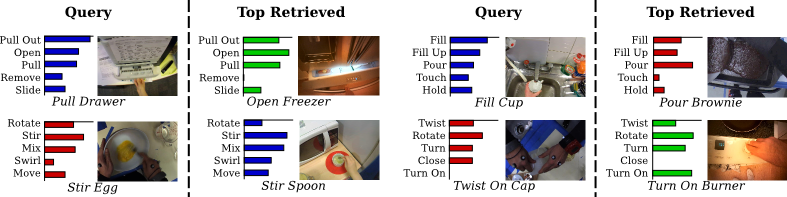

Back to Home
Michael Wray, Davide Moltisanti,Dima Damen

This work introduces verb-only representations for actions and interactions; the problem of describing similar motions (e.g. 'open door', 'open cupboard'), and distinguish differing ones (e.g. 'open door' vs 'open bottle') using verb-only labels. Current approaches for action recognition neglect legitimate semantic ambiguities and class overlaps between verbs (Fig. 1), relying on the objects to disambiguate interactions.
We deviate from single-verb labels and introduce a mapping between observations and multiple verb labels - in order to create an Unequivocal Representation of Actions. The new representation benefits from increased vocabulary and a soft assignment to an enriched space of verb labels.
We learn these representations as multi-output regression, using a two-stream fusion CNN. The proposed approach outperforms conventional single-verb labels (also known as majority voting) on three egocentric datasets for both recognition and retrieval.
Publication:
Towards an Unequivocal Representation of Actions, Michael Wray, Davide Moltisanti and Dima Damen (2018). Link: Arxiv.Video:
Results
Example cross dataset retrievals using a soft assigned multi label approach.